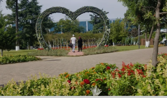

Batumi Central Park (May 6 Park) is located in Adjara, Batumi. It is the first civil garden in Batumi. Construction of the park be
gan in 1881, in the south-eastern part of Lake Nuri-Geli. The construction was entrusted to a Prussian gardener - Resler. Resler die
d in 1884, and the work was suspended for a year. From 1885, French gardener Mikhail Dalfons was invited to lead the construction of t
e city garden and the already started boulevard. Gradually, the garden was built, shrubs of different varieties and trees were planted.
Today, the garden, hidden in the green, with its beautiful paths and view of Lake Nuri is a beautiful sight and one of the perfect places
for relaxation and fun. Delphinarium and Batumi Zoo are located on the territory of the park, where you will enjoy interacting with anima
ls. Hotels, restaurants and cafes are located around the garden, where you can have a pleasant rest and taste the
most delicious dishes. Batumi Central Park is one of the most attractive places in the city for both tourists and locals.
